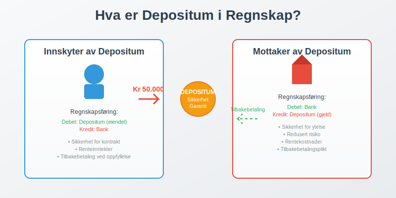
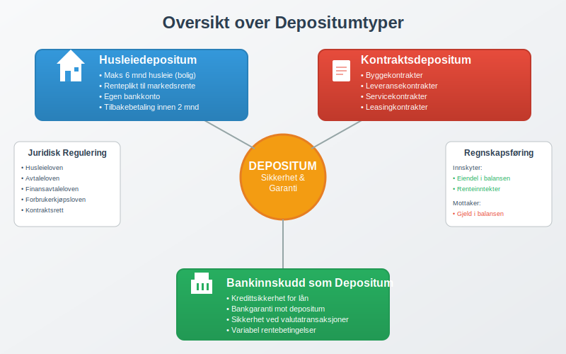
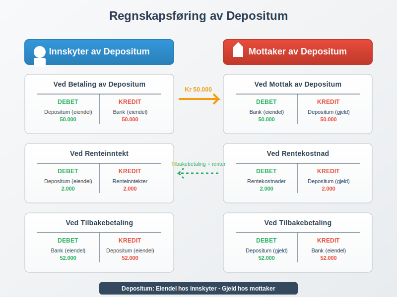

Depositum er et pengebeløp som stilles som sikkerhet eller garanti for oppfyllelse av kontraktuelle forpliktelser. I regnskapet regnskapsføres depositum som eiendel hos den som betaler og som gjeld hos den som mottar beløpet.

Hva er Depositum?
Depositum er en økonomisk sikkerhet som stilles for å garantere at kontraktuelle forpliktelser blir oppfylt. Beløpet skal i utgangspunktet tilbakebetales når kontrakten avsluttes og alle forpliktelser er oppfylt.
Hovedformål med Depositum
- Sikkerhet for utleier: Dekker potensielle skader eller manglende betaling
- Kontraktsgaranti: Sikrer at avtalevilkår overholdes
- Risikominimering: Reduserer økonomisk risiko for den som mottar depositum
- Tillitsbyggende: Viser seriøsitet fra den som stiller depositum
Juridiske Aspekter
Depositum reguleres av ulike lover avhengig av type:
- Husleieloven: Regulerer depositum ved utleie av bolig
- Avtaleloven: Generelle kontraktsregler
- Finansavtaleloven: For finansielle tjenester
- Forbrukerkjøpsloven: Ved forbrukerkjøp
Typer Depositum
Det finnes flere typer depositum som brukes i ulike sammenhenger:

Husleiedepositum
Husleiedepositum er den vanligste formen for depositum i Norge. Det stilles som sikkerhet ved leie av bolig eller næringslokaler.
Regler for Husleiedepositum:
| Aspekt | Bolig | Næringslokaler |
|---|---|---|
| Maksimal størrelse | 6 måneder husleie | Ingen begrensning |
| Renteplikt | Ja, til markedsrente | Avtales |
| Oppbevaring | Egen konto | Avtales |
| Tilbakebetaling | Innen 2 måneder | Avtales |
Kontraktsdepositum
Stilles som sikkerhet for oppfyllelse av ulike typer kontrakter:
- Byggekontrakter: Sikkerhet for ferdigstillelse
- Leveransekontrakter: Garanti for levering
- Servicekontrakter: Sikkerhet for tjenesteutførelse
- Leasing: Sikkerhet ved leasing av utstyr
Bankinnskudd som Depositum
Bankinnskudd kan fungere som depositum ved:
- Kredittsikkerhet: Sikkerhet for lån eller kreditt
- Garantistillelse: Bankgaranti mot depositum
- Valutatransaksjoner: Sikkerhet ved valutahandel
Regnskapsføring av Depositum
Regnskapsføringen av depositum avhenger av om du betaler eller mottar depositum.

For Den Som Betaler Depositum
Depositum regnskapsføres som eiendel i balansen:
Regnskapsføring ved Betaling:
Debet: Depositum (eiendel) 50.000
Kredit: Bank (eiendel) 50.000
Klassifisering i Balansen:
- Kortsiktige fordringer: Hvis tilbakebetaling innen 1 år
- Langsiktige fordringer: Hvis tilbakebetaling over 1 år
For Den Som Mottar Depositum
Depositum regnskapsføres som gjeld i balansen:
Regnskapsføring ved Mottak:
Debet: Bank (eiendel) 50.000
Kredit: Depositum (gjeld) 50.000
Klassifisering i Balansen:
- Kortsiktig gjeld: Hvis tilbakebetaling innen 1 år
- Langsiktig gjeld: Hvis tilbakebetaling over 1 år
Renter på Depositum
Når depositum forrentes, må renteinntekter/-kostnader regnskapsføres:
For Innskyter (Mottar Rente):
Debet: Depositum (eiendel) 2.000
Kredit: Renteinntekter (inntekt) 2.000
For Mottaker (Betaler Rente):
Debet: Rentekostnader (kostnad) 2.000
Kredit: Depositum (gjeld) 2.000
Praktiske Eksempler
Eksempel 1: Husleiedepositum
Situasjon: Bedrift AS leier kontorlokaler med månedlig husleie på 25.000 kr. Utleier krever depositum på 3 måneder husleie.
Beregning:
- Depositum: 25.000 × 3 = 75.000 kr
- Årlig rente: 3%
- Månedlig rente: 75.000 × 3% ÷ 12 = 187,50 kr
Regnskapsføring hos leietaker:
| Måned | Beskrivelse | Debet | Kredit |
|---|---|---|---|
| Jan | Betaling av depositum | Depositum 75.000 | Bank 75.000 |
| Jan | Husleie | Husleiekostnad 25.000 | Bank 25.000 |
| Feb | Renteinntekt | Depositum 188 | Renteinntekter 188 |
Eksempel 2: Kontraktsdepositum
Situasjon: Byggefirma stiller depositum på 200.000 kr som sikkerhet for byggekontrakt.
Regnskapsføring:
Ved Stilling av Depositum:
Debet: Depositum - byggekontrakt 200.000
Kredit: Bank 200.000
Ved Kontraktens Fullførelse:
Debet: Bank 200.000
Kredit: Depositum - byggekontrakt 200.000
Skattemessige Konsekvenser
For Innskyter av Depositum
- Ingen skattemessig fradrag ved innbetaling av depositum
- Renteinntekter på depositum er skattepliktige
- Tap på depositum kan være fradragsberettiget hvis det er driftsmessig begrunnet
For Mottaker av Depositum
- Ikke skattepliktig inntekt ved mottak av depositum
- Rentekostnader på depositum er fradragsberettigede
- Beholdt depositum kan være skattepliktig avhengig av årsak
Mva-behandling
Depositum har normalt ingen mva-konsekvenser ved inn- og utbetaling, men:
- Beholdt depositum kan utløse mva-plikt
- Depositum for varer/tjenester kan ha mva-konsekvenser
- Konsulter mva-reglene for spesifikke situasjoner
Depositum vs. Andre Sikkerheter
Sammenligning med Andre Sikkerhetsinstrumenter
| Type | Likviditet | Risiko | Kostnad | Fleksibilitet |
|---|---|---|---|---|
| Depositum | Lav | Lav | Lav | Middels |
| Bankgaranti | Høy | Lav | Middels | Høy |
| Kausjon | Høy | Høy | Lav | Høy |
| Pant | Variabel | Middels | Lav | Lav |
Fordeler med Depositum
- Enkel administrasjon: Lett å håndtere regnskapsmessig
- Lav kostnad: Ingen gebyrer utover rentekostnad
- Sikker garanti: Kontant sikkerhet
- Fleksibel bruk: Kan brukes i mange sammenhenger
Ulemper med Depositum
- Bundet kapital: Reduserer likviditet
- Rentekostnad: Alternativkostnad ved binding av midler
- Kredittrisiko: Risiko for at mottaker ikke kan tilbakebetale
- Inflasjonrisiko: Verdifall over tid
Internkontroll og Rutiner
Rutiner for Depositum
Etabler gode rutiner for håndtering av depositum:
For Utbetalte Depositum:
- Dokumentasjon: Oppbevar alle avtaler og kvitteringer
- Oppfølging: Følg opp renteinntekter og tilbakebetalinger
- Avstemming: Avstem depositumkonti regelmessig
- Forsikring: Vurder forsikring av større depositum
For Mottatte Depositum:
- Egen konto: Hold depositum på egen bankkonto
- Renteberegning: Beregn og utbetal renter korrekt
- Tilbakebetaling: Etabler rutiner for rask tilbakebetaling
- Dokumentasjon: Dokumenter årsaker til eventuelt beholdt depositum
Regnskapsrutiner
Implementer gode regnskapsrutiner:
- Egen konto: Bruk egne konti for depositum i kontoplanen
- Periodisering: Periodiser renteinntekter/-kostnader korrekt
- Noteopplysninger: Gi tilstrekkelige noteopplysninger i årsregnskapet
- Avstemming: Avstem depositumkonti mot bankkonti
Juridiske Aspekter og Tvister
Vanlige Tvistespørsmål
- Tilbakebetaling: Uenighet om tilbakebetalingsplikt
- Renteberegning: Feil renteberegning eller manglende rentebetaling
- Skader: Uenighet om skader som skal dekkes av depositum
- Tidspunkt: Forsinkelse i tilbakebetaling
Forebyggende Tiltak
- Klare avtaler: Inngå detaljerte avtaler om depositum
- Dokumentasjon: Dokumenter tilstand ved overlevering
- Kommunikasjon: Oppretthold god kommunikasjon mellom partene
- Juridisk bistand: Søk juridisk bistand ved komplekse avtaler
Digitalisering og Fremtiden
Moderne Løsninger
- Digitale plattformer: Automatisert håndtering av depositum
- Blockchain: Sikker og transparent depositumhåndtering
- Forsikringsløsninger: Forsikring som alternativ til depositum
- Automatisering: Automatisk renteberegning og tilbakebetaling
Regnskapsmessige Endringer
- Automatisk bilagsføring: Digitale systemer for regnskapsføring
- Sanntidsrapportering: Løpende oppfølging av depositum
- Integrerte løsninger: Kobling mellom depositumhåndtering og regnskapssystem
Konklusjon
Depositum er et viktig sikkerhetsinstrument som krever korrekt regnskapsføring og god administrasjon. Nøkkelpunktene er:
Viktige Prinsipper:
- Regnskapsføring: Som eiendel hos innskyter, gjeld hos mottaker
- Klassifisering: Kort- eller langsiktig avhengig av tilbakebetalingstidspunkt
- Renter: Må regnskapsføres løpende
- Skattemessig behandling: Følg gjeldende skatteregler
Beste Praksis:
- Etabler gode rutiner for håndtering av depositum
- Dokumenter alle transaksjoner grundig
- Følg opp renteinntekter og tilbakebetalinger
- Vurder alternative sikkerhetsinstrumenter når det er hensiktsmessig
Ved å følge disse prinsippene sikrer du korrekt regnskapsføring og effektiv administrasjon av depositum i din virksomhet.